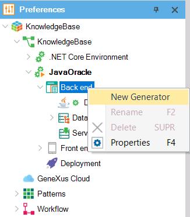

A GeneXus Generator generates code in a programming language. For each Environment defined in your Knowledge Base, you indicate the Generator you want to use to generate the code corresponding to the application Front end as well as the Generator you want to use to generate the code corresponding to the application Back end (in particular, the Back end Generator is also used to generate the programs to create/modify the database structure, called Reorganization programs). For the Back end, in addition to having a default Generator, eventually, you can create others, for example, to generate some objects with Java and others (i.e. some batch processes) in RPG. The following image shows how to create a new Generator:  After that, you can associate objects with Generators and it works as follows. Each Main Object can be associated with a Generator (default, reorg, or a user-defined one) that defines the target language to generate. The Generator property of the main object indicates the Generator with which GeneXus has to build any object of the main's call tree. Note that an object can be called by more than one main, so it can be generated with different Generators.
See Also |
| Sub Categories | ||
| Category:GeneXus iSeries Applications | Category:GeneXus Ruby Generator | Category:GeneXus Visual FoxPro Generator |
| Category:Native Mobile Generator | Category:Smart Devices Generator (GeneXus 16) |
| Pages | ||
| Chatbot generator | Chatbot generator (GeneXus 16 upgrade 3) | Chatbot generator (GeneXus 16 upgrade 8) |
| GeneXus 15 Web Generators |